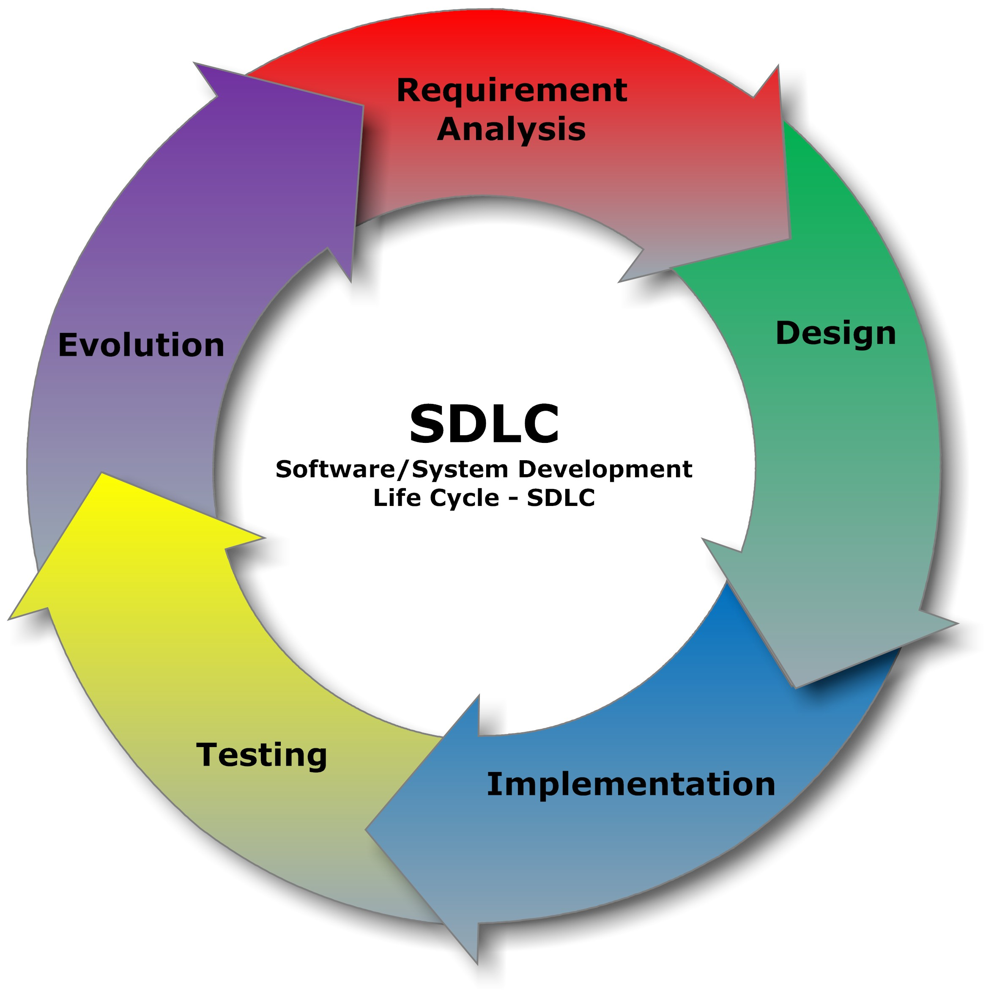

|
Juan Antonio Breña Moral Engineering @ IG Group, EU Division
Twitter | GitHub | LinkedIn |
|
|
"Make it work, make it right, make it fast." - Kent Beck "Lead me, follow me, or get out of my way.", "Pressure makes diamonds." - George S. Patton Jr. |
|
|
Leandro Loureiro Engineering Manager @ ING
GitHub | LinkedIn |
|
|
I'm from Portugal, living in Amsterdam Spent most of my career as a Software Engineer in Financial Services Engineering Manager for the last 4 years Passionate about travel and DIY electronics |
|
The usage of AI in software engineering is changing the way we work, but that change brings new challenges to address.

Design the context
Define boundaries
contracts
and owners
Discover and connect context
Trace dependencies
document decisions
and close gaps
Recover and validate context
Read behavior
data and incidents
then test assumptions
Focus: brownfield enterprise systems—working software, fragmented knowledge, and live dependencies.
Plinth is an AI-native engineering toolkit for modern Java enterprise SDLC
Four ways to use the toolkit
/onboarding/update-issue → /explore-problem →
/create-acceptance-criteria/create-spec → /explore-design/implement-spec → /close-spec141-java-refactoring-with-modern-features142-java-functional-programming143-java-functional-exception-handling144-java-data-oriented-programming
121-java-object-oriented-design122-java-type-design123-java-design-patterns
126-java-exception-handling128-java-generics124-java-secure-coding
033-architecture-diagrams034-architecture-design-exploration030-architecture-adr-general
110-java-maven-best-practices111-java-maven-dependencies112-java-maven-plugins
130-java-testing-strategies131-java-testing-unit-testing
/onboarding/update-issue → /explore-problem →
/create-acceptance-criteria/create-spec → /explore-design/implement-spec → /close-spec/onboarding
Makes the repository ready to work with Plinth AI native workflow
by securing two prerequisites:
AGENTS.md
* Only needs to be done once per repository / project.
Two artifacts, two questions, two audiences
/update-issue
/explore-problem
/create-acceptance-criteria
/update-issue
Rewrites an existing issue description as structured,
evidence-backed content
/explore-problem
Evaluates the issue through five lenses and produces a Functional Specification
/create-acceptance-criteria
Turns the Functional Specification into observable Gherkin scenarios
/explore-problem
turns what and why into something checkable and easier to review
/create-spec
/explore-design
A lightweight and configurable framework for creating and managing software specifications.
Build the right thing, and build it right
Capture what you want to build in a spec, and keep your team and your coding agents aligned as the work evolves.
/create-spec
Turns approved material into a validated OpenSpec change
/explore-design
Refine the technical design of an issue or OpenSpec change before implementation.
(Optional) whenever a decision or a view is worth keeping
/create-adr
/create-diagram
ADR · Architecture Decision Record: a short document capturing one decision, its context and its consequences.
/create-adr
Records an architectural decision that has already been taken
/create-diagram
Draws one architecture view from the approved artifacts
/implement-spec
/close-spec
Implement and improve Java applications with guidance on:
/implement-spec
Delivers an approved task list through framework-aware delegation
/implement-specThe tech lead agent runs the process, but it never writes code itself
/close-spec
Archives a delivered OpenSpec change and folds it into the specs
141-java-refactoring-with-modern-features |
Add Modern Java Features |
Lambdas & method references · Stream API · Optional · java.time · var · List.of() · text blocks · Java 25 features |
|
142-java-functional-programming |
Add Functional Programming style |
| Records & immutability · pure functions · function composition · pattern matching · sealed types · Stream Gatherers | |
143-java-functional-exception-handling |
Apply functional programming approaches for error handling |
Optional & VAVR Either over exceptions · sealed error hierarchies · map/flatMap error pipelines |
|
144-java-data-oriented-programming |
Add Data Oriented Programming |
| Separate data from behavior with records · immutable data & pure transformations · flat data with ID references · pure validation | |
121-java-object-oriented-design |
Apply Object Oriented Design principles |
| SOLID · DRY · YAGNI · composition over inheritance · encapsulation · code smells: God Class, Feature Envy, Data Clumps | |
122-java-type-design |
Review Type Design in development |
Value objects over primitive obsession · type-safe wrappers · generics · fluent interfaces · BigDecimal for money |
|
123-java-design-patterns |
Select and apply Java, REST, event-driven, persistence, and integration patterns |
| Creational, structural & behavioral patterns · REST contracts · Kafka outbox & sagas · repositories & transactions · anti-corruption layers | |